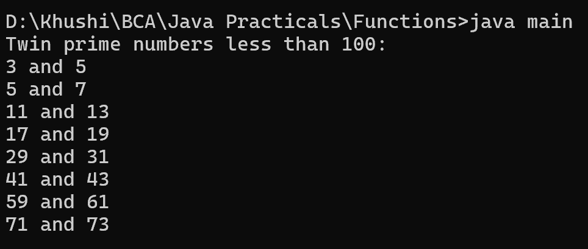

8. Write a Java method to find all twin prime numbers less than 100.
class main {
public static void main(String[] args) {
System.out.println("Twin prime numbers less than 100:");
for (int i = 2; i < 100 - 2; i++) {
if (isPrime(i) && isPrime(i + 2)) {
System.out.println(i + " and " + (i + 2));
}
}
}
public static boolean isPrime(int num) {
if (num <= 1) {
return false;
}
for (int i = 2; i * i <= num; i++) {
if (num % i == 0) {
return false;
}
}
return true;
}
}
